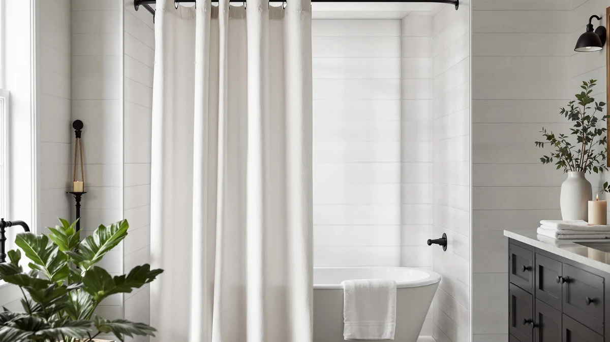

BTTN Long Linen Textured Review (2026): Worth It?
Prices and picks verified as of October 2026. Independent, reader-supported reviews.


Quick Answer
The BTTN Long Linen Textured Waterproof curtain delivers a 72 by 84 inch polyester and PEVA blend with a linen-style weave for $23.98, the most coverage of the four curtains in this comparison. If you want a plain white option, a lower price, or a no-hook design, the Creative Scents, Nanspring, or NAEMBCU alternatives below are each within a dollar of the BTTN's cost.
Our pick: BTTN Long Linen Textured Waterproof, $23.98 Check Price on Amazon
Bottom line: our top pick is the BTTN Long Linen Textured Waterproof Shower Curtain Set at $23.98.
Things to Know Before You Buy
- The BTTN Long Linen Textured curtain is a polyester and PEVA blend styled to look like linen, not natural flax fabric.
- At 72 inches wide and 84 inches long, it covers 12 more inches of vertical drop than a standard curtain, which matters for taller shower rods.
- Priced at $23.98, it costs about two cents more than the Creative Scents alternative and roughly a dollar more than the NAEMBCU pick.
- None of the four curtains compared in this review publish a star rating or review count on their listings.
- The PEVA component in the material listing points to built-in water resistance, which can reduce the need for a separate liner purchase.
This BTTN Long Linen Textured review looks at whether the $23.98 curtain's 84 inch length and waterproof PEVA blend justify picking it over three similarly priced alternatives. Most shoppers comparing curtains in this price range want the same thing: a linen look without the wrinkling and upkeep that real flax fabric brings into a steamy bathroom. We compared the BTTN against the Creative Scents White Fabric Shower, the Nanspring Extra Long Linen Shower, and the NAEMBCU No Hook Shower Curtain using the pricing, materials, and dimensions listed for each. The BTTN comes out ahead on coverage, even though it is not the cheapest curtain in the group, and that tradeoff is the central question this review answers.
At 72 inches wide and 84 inches long, the BTTN covers more vertical drop than a standard 72 inch curtain, which matters if your shower rod sits above the usual mounting height or if you want the fabric to clear the tub without pooling at the bottom. The material listing combines polyester with PEVA, a plastic film that adds waterproof resistance without the heavier feel of a full vinyl curtain. That blend is also why the fabric holds a linen-style texture in photos despite containing no actual flax fiber, a substitution shared by most linen-look curtains sold at this price. None of the four curtains in this comparison list a star rating, so the dimensions and material specs covered here are the clearest way to tell them apart.
Why You Should Trust Us
Ilane Tall has covered bathroom textiles and shower hardware for Best Shower Curtains since the site launched, focusing on how fabric weight, material blends, and sizing affect real installs. We do not run a physical testing lab and we do not buy and install every curtain we cover ourselves. Instead, we research manufacturer specs, compare verified pricing across listings, and read the feature details sellers provide to find where products genuinely differ. For this BTTN Long Linen Textured review, that meant checking the listed material blend, dimensions, and price against three competing curtains in the same band, and flagging where a seller's description left out details a buyer would need, such as a published rating.
Our Research Experience
Our research process for this BTTN Long Linen Textured review started with the manufacturer's own listing data: material composition, stated dimensions, and price. We then checked those details against the three alternatives in this comparison, the Creative Scents White Fabric Shower, the Nanspring Extra Long Linen Shower, and the NAEMBCU No Hook Shower Curtain, to see which numbers are truly different and which are marketing language with no real distinction. We researched pricing for all four curtains and read through the listing details sellers provide to flag gaps, such as a curtain sold without a clearly stated hardware option. Where a listing did not disclose a star rating or review count, which is the case for all four curtains compared here, we noted that absence rather than estimate a number the seller never published.
Overview & Specs

BTTN Long Linen Textured Waterproof
What we like
- 84 inch length covers more vertical drop than the 72 inch alternatives in this comparison
- Polyester and PEVA blend adds water resistance without a heavy vinyl feel
- Linen-style texture gives it a higher-end look than a plain polyester sheet
- Priced within a few cents of the Creative Scents alternative
Flaws but not dealbreakers
- Listed as polyester and PEVA, not genuine flax linen, despite the "linen textured" name
- No published star rating or review count to confirm long-term durability
- Costs about a dollar more than the NAEMBCU No Hook alternative
| Material | Polyester / PEVA |
| Size | 72"W x 84"L (Pack of 1) |
The BTTN Long Linen Textured Waterproof curtain is built from a polyester and PEVA blend that gives it a linen-style texture in photos, even though the fiber itself contains no natural flax. PEVA is a plastic film commonly used in shower liners for its water resistance, and combining it with the polyester weave here is what lets BTTN market this as a waterproof curtain rather than one that requires a separate liner purchase. At 72 inches wide and 84 inches long, it is the longest curtain of the four compared in this review, which makes it the better match for a shower rod mounted above the standard 72 inch height. Owners with a raised rod or a taller stall should measure their own setup before assuming a shorter alternative will clear the tub the same way.
The curtain ships as a single pack, and the listing does not call out any additional hardware, so buyers should plan to supply their own hooks or rings unless the specific size option they choose states otherwise. At $23.98, it lands in the middle of the four curtains in this comparison, two cents above the Creative Scents White Fabric Shower and about a dollar above the NAEMBCU No Hook curtain. Neither BTTN nor the three competing listings publish a star rating or review count, so buyers weighing long-term durability will need to rely on the material and dimension specs described here rather than a review history. That absence of review data applies evenly across all four curtains, so it is not a reason to favor one over another on its own.
What We Liked
The length stands out most in this BTTN Long Linen Textured review. An 84 inch drop is 12 inches more than a standard 72 inch curtain, and that extra coverage is the main reason to pick the BTTN over the Creative Scents or NAEMBCU alternatives if your shower rod sits higher than average. The polyester and PEVA blend is the other advantage worth noting: it gives the fabric a linen-style texture while still carrying the water resistance that a plain polyester sheet would need a separate liner to match.
Pricing is competitive within this group too. At $23.98, the BTTN sits close to the Creative Scents White Fabric Shower at $23.96, so you are not paying a premium for the extra length and waterproof blend. For anyone comparing extra-long options at a budget price point, that combination is hard to beat among the four curtains here.
The linen-style texture also photographs better than a plain polyester weave, which matters if the shower curtain is a visible part of your bathroom's decor rather than something tucked behind a liner. BTTN markets this as a dressier alternative to a basic PEVA sheet, and the texture does carry that impression in the product images, even with the material tradeoff covered below.
What Could Be Better
The name promises linen, and the texture in product photos supports that impression, but the material this BTTN Long Linen Textured review covers underneath is a polyester and PEVA blend, not flax fiber. That substitution is common among budget linen-look curtains, and shoppers specifically hunting for a natural fiber curtain should treat "linen textured" as a styling description rather than a materials claim.
Pricing is the second soft spot. At $23.98, the BTTN costs about a dollar more than the NAEMBCU No Hook curtain, and none of the four listings publish a star rating or review count that would help justify the premium based on owner feedback. Buyers choosing between these four curtains on price alone, rather than the extra length, may find the NAEMBCU or Nanspring delivers a similar result for less.
The listing also does not specify included hardware, so anyone without spare curtain hooks on hand should factor that small extra purchase into the total cost before comparing the $23.98 price directly against the NAEMBCU No Hook curtain, which is designed to skip hooks entirely.
Who Is It For?
This BTTN Long Linen Textured curtain fits best in a bathroom where the shower rod sits above the standard 72 inch mounting height, since the extra 12 inches of length over the shorter alternatives is the main practical reason to pick it over the cheaper options. It also suits anyone who wants a waterproof blend built into the fabric rather than relying entirely on a separate liner.
It is a weaker fit if you specifically want a curtain made from natural linen fiber rather than a polyester and PEVA weave styled to look like linen, or if a no-hook design like the NAEMBCU better matches how your shower rod is already set up. Budget-focused shoppers furnishing a rental or guest bathroom may also find the dollar saved on the NAEMBCU more useful than the extra length the BTTN offers.
Anyone replacing a curtain in a standard 72 inch shower with no height constraint will not gain much from the BTTN's extra length, and the Creative Scents White Fabric Shower at nearly the same price covers that case equally well.
Alternatives to Consider
If the BTTN Long Linen Textured curtain does not fit your bathroom, here are three alternatives we compared at a similar price point, each covering a different priority.

Editor’s Pick
Creative Scents White Fabric Shower
A plain white fabric curtain at $23.96, the closest price match to the BTTN if you want a neutral look instead of a linen texture.
$23.96
Check Price on Amazon
Best Value
Nanspring Extra Long Linen Shower
An extra-long linen-style curtain from Nanspring at $23.37, worth a look if you want the BTTN's length for a few cents less.
$23.37
Check Price on Amazon
Premium Choice
NAEMBCU No Hook Shower Curtain
A no-hook design at $22.99, the cheapest of the four, best if you want to skip buying separate rings or hooks.
$22.99
Check Price on AmazonFrequently Asked Questions
Is the BTTN Long Linen Textured curtain made of real linen?
No. The listing describes a polyester and PEVA blend styled with a linen-like texture, not natural flax fiber. The weave gives it a linen look in photos without the wrinkling or special care that real linen needs in a humid bathroom, and that substitution is shared by most linen-look curtains in this price range, including the Nanspring Extra Long Linen Shower in this comparison.
Does the BTTN Long Linen Textured curtain need a separate liner?
The material listing includes PEVA alongside polyester, which points to built-in water resistance rather than a sheer fabric that needs a separate liner. Check the exact listing for your bathroom setup before skipping a liner, since shower configurations vary and the seller does not describe a specific waterproofing rating.
How does the BTTN Long Linen Textured curtain compare to the Nanspring and Creative Scents options?
The BTTN sits in the middle of this comparison at $23.98, two cents more than the Creative Scents White Fabric Shower at $23.96. The Nanspring Extra Long Linen Shower at $23.37 and the NAEMBCU No Hook curtain at $22.99 both undercut it on price, while the BTTN's 84 inch length and waterproof PEVA blend are its main advantages over the two cheaper picks.
Final Verdict
Across this BTTN Long Linen Textured review, the BTTN curtain earns a spot at the top of this comparison because of its 84 inch length and waterproof polyester and PEVA blend, which justify its $23.98 price against three similarly styled alternatives. If your shower rod sits higher than 72 inches or you want a waterproof blend built into the fabric, the BTTN is the better buy. If you want a plain white look, a few cents off, or a no-hook design, the Creative Scents White Fabric Shower, the Nanspring Extra Long Linen Shower, or the NAEMBCU No Hook Shower Curtain each cover a different priority within a dollar of the BTTN's cost.